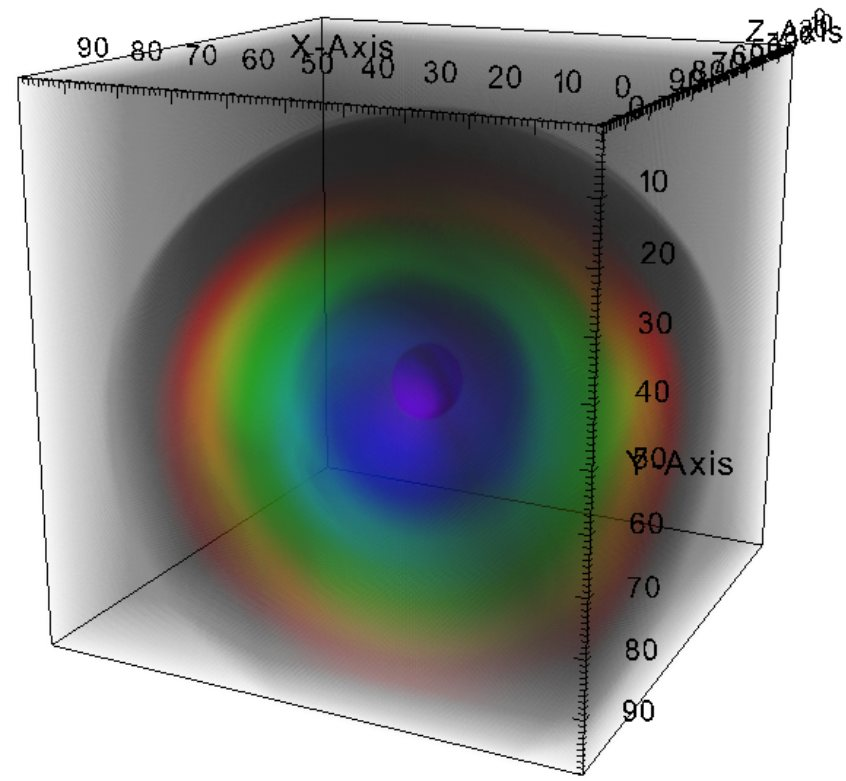

Accurate multi-view geometry
How to recover 3D points and cameras accurately and quickly from many views. With students at UC Davis I developed angular-error cost functions for multi-view triangulation that are accurate and fast enough for very large scenes, including GPU versions. I studied how they behave under noise and short baselines, and used ray divergence to condition bundle adjustment.
- A Comparative Study of Recent GPU-Accelerated Multi-View Sequential Reconstruction Triangulation Methods for Large-Scale Scenes ACCV 2014 Workshops
- Uncertainty, Baseline, and Noise Analysis for L1 Error-Based Multi-View Triangulation ICPR 2014
- GPU-Accelerated and Efficient Multi-View Triangulation for Scene Reconstruction WACV 2014
- Fury of the Swarm: Efficient and Very Accurate Triangulation for Multi-View Scene Reconstruction ICCV 2013 Workshops